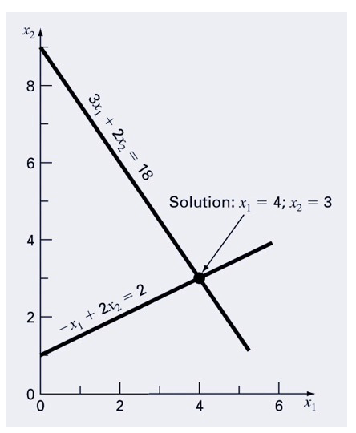
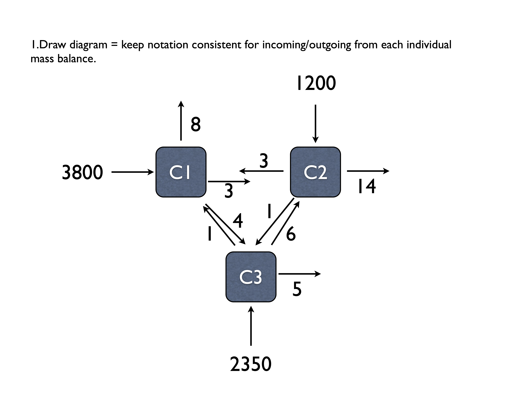

Systems of Equations Examples
14.2 Example 1
Imagine you have a simple set of equations, and you plot them out. The solution is at the intersection if you plot them. Let’s solve using matrix algebra:
 \[ 3x_1 + 2x_2 = 18 \\ -x_1 + 2x_2 = 2 \]
# Define our matrix of coefficients
coef_matrix <- matrix(data = c(3, 2, -1, 2),
nrow = 2,
ncol = 2,
byrow = TRUE)
# Define right hand side matrix
rhs_matrix <-
matrix(
data = c(18, 2),
nrow = 2,
ncol = 1,
byrow = TRUE
)
# Solving the system of equations
# using inverse
# calculate the inverse of coef_matrix
inv_coef_matrix <- solve(coef_matrix)
# multiply inverse coefficient matrix by rhs to get the solution
soln <- inv_coef_matrix %*% rhs_matrix
soln## [,1]
## [1,] 4
## [2,] 3## [,1]
## [1,] 4
## [2,] 3We’ll employ the solve function. When you enter just the A matrix, you get the inverse as the output. When you enter the A and B matrix/vectors, you’ll get the x vector.
matrix(vector, ncol = col, byrow = TRUE) = define a matrix from vector filling in values across col columns starting with the first row and proceeding left to right top to bottom.
%*% = matrix multiplication operator.
solve = function for solving systems, can input A or A & B.
14.3 Example 2
\[ \begin{aligned} 10 x_1 + 2x_2 - x_3 & = 27 \\ -3 x_1 - 6x_2 + 2x_3 & = -61.5 \\ x_1 + x_2 + 5x_3 & = -21.5 \end{aligned} \]
A <- matrix(c(10, 2, -1,
-3, -6, 2,
1, 1, 5),
nrow = 3,
byrow = TRUE)
B <- matrix(data = c(27,
-61.5,
-21.5), ncol = 1, byrow = TRUE)
x <- inv(A) %*% B
x## [,1]
## [1,] 0.5
## [2,] 8.0
## [3,] -6.014.4 Example 3 (Problem 11.3 in Chapra)

\[ \begin{aligned} In &= Out \\ \text{Tank 1: } 3800 + 3c_2 + 1c_3 &= (8 + 3 + 4)c_1 \\ \text{Tank 2: } 1200 + 3c_1 + 6c_3 &= (3 + 1 + 14)c_2 \\ \text{Tank 3: } 2350 + 4c_1 + 1c_2 &= (5 + 6 + 1)c_3 \end{aligned} \] and rearranging and simplifying this
\[ \begin{aligned} \text{Tank 1: } 3800 &= 15c_1 &- 3c_2 &- 1c_3\\ \text{Tank 2: } 1200 &= -3c_1 &+ 18c_2 &- 6c_3 \\ \text{Tank 3: } 2350 &= - 4c_1 &- 1c_2 &+ 12c_3 \end{aligned} \]
Here we’ll use the PRACMA package that uses mldivide to solve for x in A*x=b. We can also first solve for the inverse of A using solve(A).
## [,1] [,2] [,3]
## [1,] 15 -3 -1
## [2,] -3 18 -6
## [3,] -4 -1 12## [1] 0.07253886## [,1]
## [1,] 3800
## [2,] 1200
## [3,] 2350## [,1]
## [1,] 320.2073
## [2,] 227.2021
## [3,] 321.502614.4.1 To find effect of reactor 3 on reactor 1….
This is where the matrix inverse is really cool, and provides an opportunity to quantify change in one part of a system on another component. Here, imagine we make a change in reactor 3, and want to know how this in turn changes the concentration in reactor 1. We’ll walk through this in class in some more detail, but the basic premise is the following: when we multiple the inverse of A by b, the first equation for reactor 1 is the following:

Thus we can use the circled part to determine the effect of reactor 3 on 1!
## [1] 29.2228